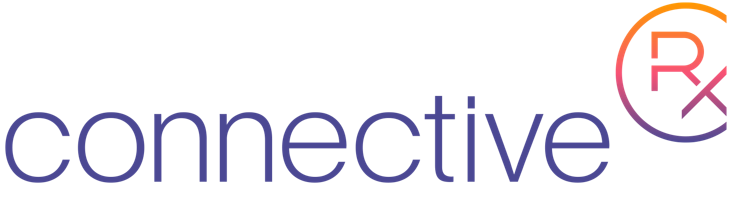

Brian Rosamilia
Work
- 
Software Engineer - ConnectiveRx(July 2016 - Present)
-
Senior Software Engineer - Prevalent Inc (October 2014 - May 2016)
-
Software Engineer - Pursuit Solutions (July 2013 - October 2014)
-
Programmer - Premier Healthcare Exchange / PayPlus Solutions (May 2009 - June 2013)
School
-
Bachelors of Science, Computer Science - Ramapo College (2005-2009)
Projects
-
NSear.ch - An application to assist in researching things on the internet
-
Quickstart set of scripts to simple Linux Docker containers on a Windows host
Interests
-
Web development, UI/UX, Reactive Programming, Databases (SQL + NoSQL), Static Analysis